Frente de caixa com leitor e atalhos
O campo de leitura fica sempre ativo, então o leitor de código de barras lança o item direto na venda. Dá para fechar a venda inteira sem usar o mouse.
- F2 busca
- F4 pagamento
- F8 remove item
O agi pdv registra as vendas no caixa, controla o estoque e faz trocas com vale-troca pelo navegador, com o servidor rodando num computador da própria loja.
Feito para mercearias, lojas de roupa, papelarias, lojas de material de construção e conveniências.
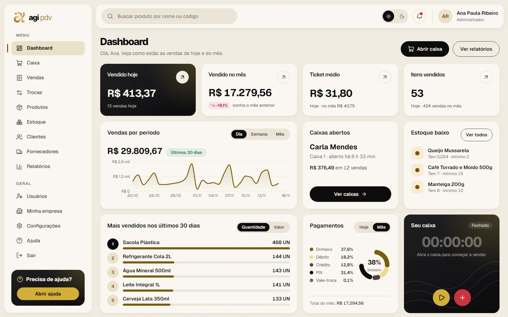
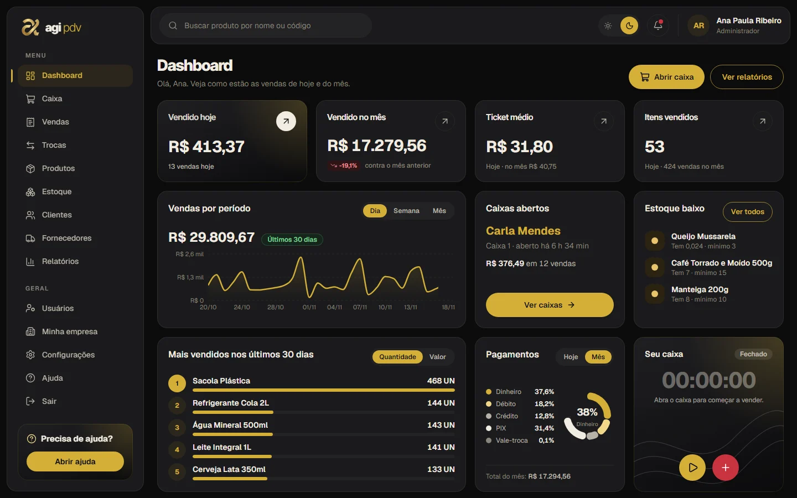
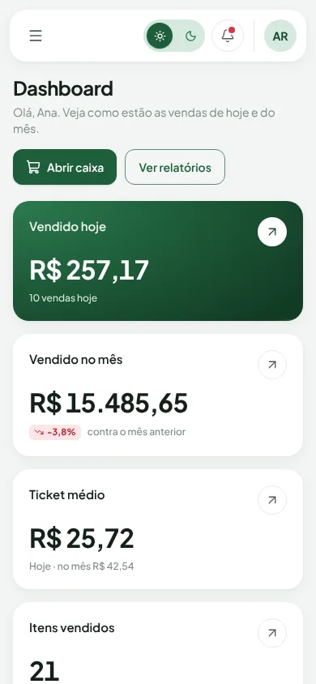
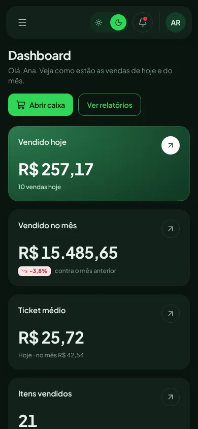
Tudo o que está abaixo já vem na versão 1, sem plano pago e sem módulo extra.
O campo de leitura fica sempre ativo, então o leitor de código de barras lança o item direto na venda. Dá para fechar a venda inteira sem usar o mouse.
A mesma venda aceita dinheiro, débito, crédito, PIX e vale-troca juntos. O sistema calcula o troco e tem botões de cédula de R$ 10 a R$ 200.
Quando um produto chega ao estoque mínimo, ele aparece no dashboard com uma sugestão de quanto comprar. Essa lista vira uma planilha para mandar ao fornecedor.
A devolução gera um vale com código, saldo e validade de 90 dias, que o cliente usa como forma de pagamento na compra seguinte. O prazo padrão para trocar é de 30 dias.
Vendas por dia, por forma de pagamento e por operador, curva ABC, fechamentos de caixa e outros. O botão Baixar planilha gera um CSV que abre no Excel com os acentos certos.
Administrador, gerente e caixa. Quando o operador de caixa dá um desconto acima do limite ou cancela uma venda, um gerente digita a senha ali no terminal, e o sistema guarda quem fez, quem autorizou e quando.
Todas as telas existem nas duas versões. O botão de troca fica na barra de cima, ao lado das notificações.
A API e o banco rodam num computador da loja. Os outros caixas e o computador do escritório abrem o sistema pelo navegador, cada operador com o seu caixa aberto.
Capturas do sistema com o Mercadinho Bom Preço, a loja de exemplo que a instalação pode criar. As imagens trocam junto com o tema desta página.
Vendido hoje e no mês, ticket médio, os cinco produtos mais vendidos em 30 dias, a divisão por forma de pagamento e quem está com o caixa aberto agora.
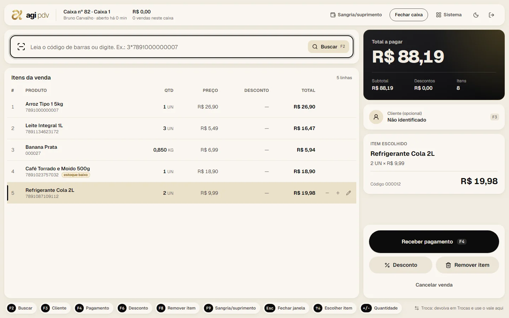
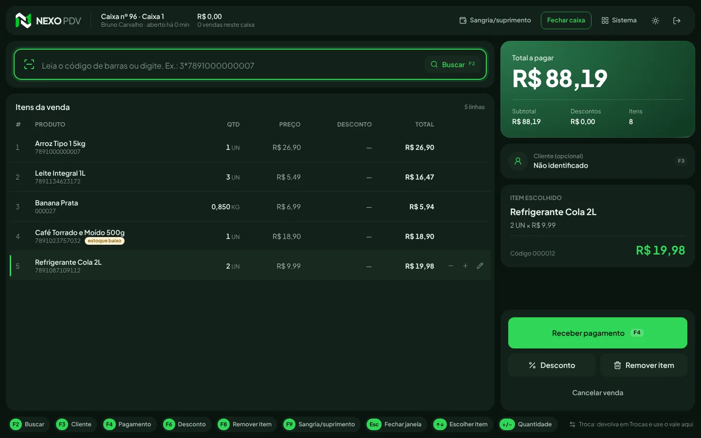
O caixa ocupa a tela inteira, sem menu lateral. A lista de itens fica à esquerda, o total fica à direita e os atalhos de teclado ficam no rodapé para quem está aprendendo.
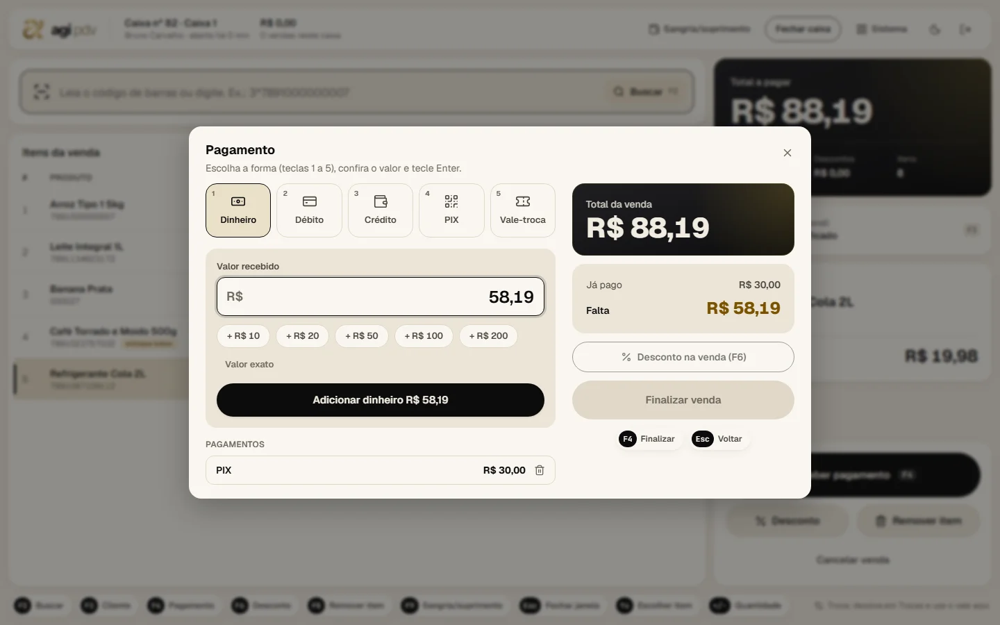
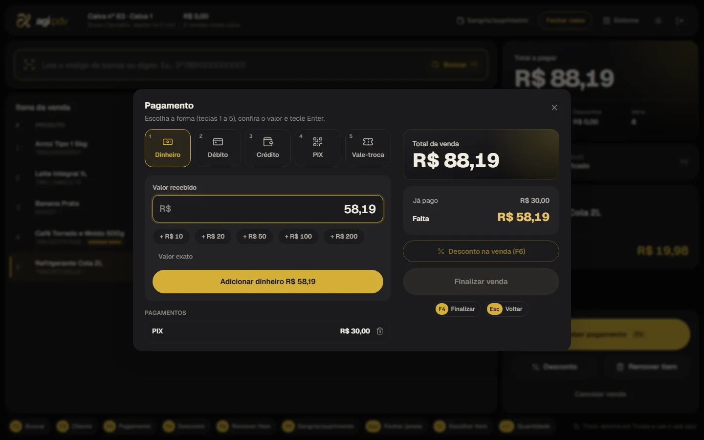
As teclas 1 a 5 escolhem a forma de pagamento. Nesta venda o cliente pagou R$ 30,00 no PIX e vai completar os R$ 58,19 em dinheiro.
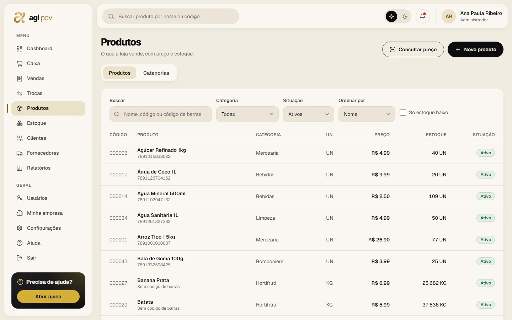
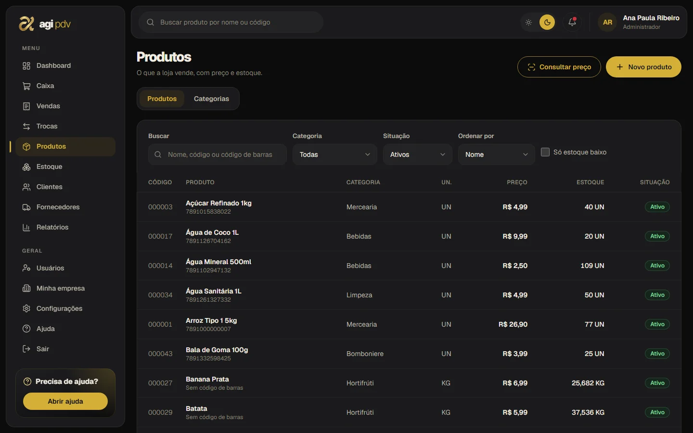
Para cadastrar um produto bastam nome e preço. Código de barras, categoria, custo, estoque mínimo e fornecedor podem ser preenchidos depois.
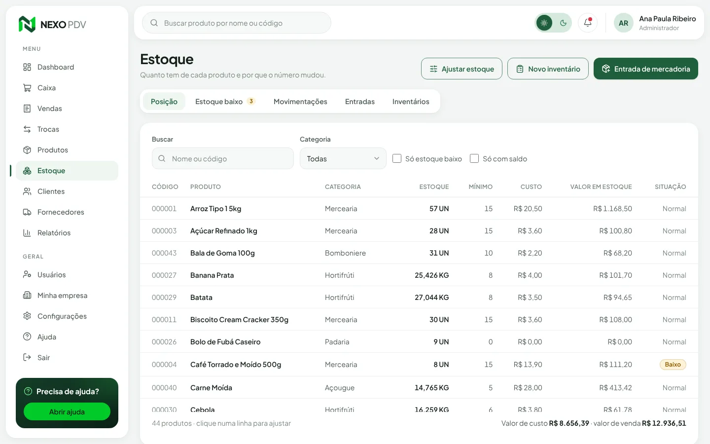
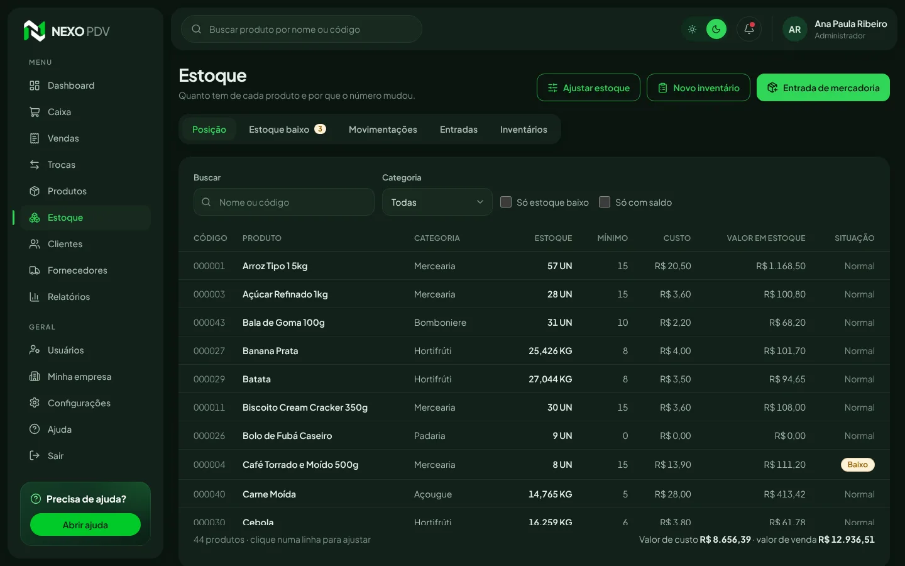
Saldo, mínimo e valor parado em estoque por produto. Nas outras abas ficam a entrada de mercadoria, o ajuste manual, o inventário e o histórico de cada movimentação.
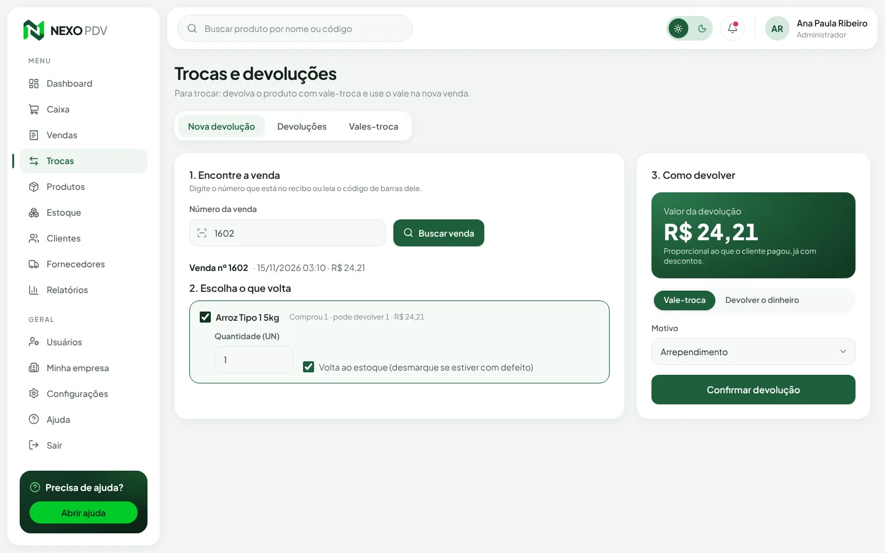
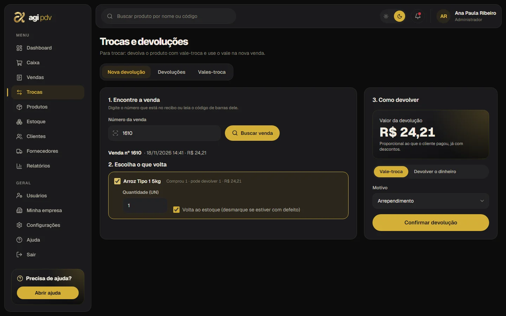
Você digita o número que está no recibo, marca o que voltou e escolhe entre vale-troca e dinheiro. Se o produto voltou com defeito, ele não entra de novo no estoque.
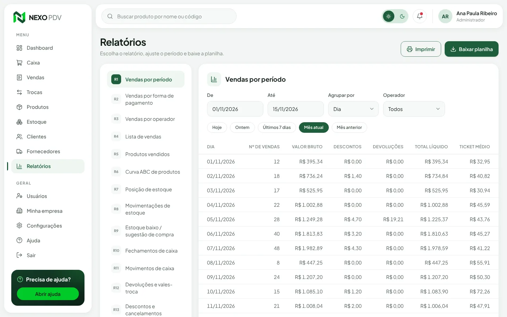
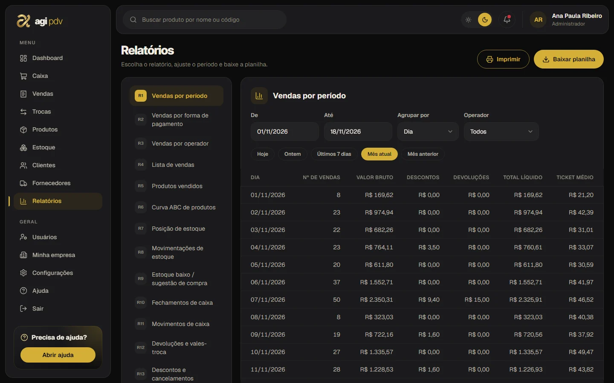
Cada relatório tem filtro de período (hoje, ontem, últimos 7 dias, mês atual ou mês anterior), totais no rodapé e os botões Imprimir e Baixar planilha.
O dono pode olhar as vendas do dia pelo celular, desde que esteja na rede da loja. No celular o menu lateral vira uma gaveta. A frente de caixa foi desenhada para telas a partir de 1024 px.
O instalador é para Windows 10 ou 11 e já traz o banco de dados. Não precisa de terminal.
agi-pdv-Setup.exe, com cerca de 150 MB. Instale no computador que vai ficar ligado na loja, de preferência o do caixa principal.
Se o Windows mostrar "O Windows protegeu o computador", clique em Mais informações e depois em Executar assim mesmo. O aviso aparece porque o instalador ainda não tem assinatura digital.
Na primeira abertura, informe o nome e o CNPJ da loja e crie o seu usuário de administrador. Depois cadastre os produtos ou dê entrada no estoque.
No menu Loja → Endereço para os outros caixas aparece o endereço que os outros computadores abrem no navegador. O backup sai sozinho todo dia em Documentos\agi pdv\backups.
Vai mexer no código? As instruções para desenvolvedores estão no README do repositório.
A versão 1 não emite nota fiscal e não se comunica com maquininha nem com banco: o cliente paga na maquininha ou no PIX da loja e o operador registra no sistema como foi pago. Estes itens ficaram para as próximas versões.
NFC-e, NF-e e SAT, com NCM, CFOP e CST no cadastro do produto.
Valor enviado direto para a maquininha e conciliação das vendas no cartão.
Cobrança gerada no próprio caixa. Boletos e gateways de pagamento entram junto.
Continuar vendendo quando o caixa perde a conexão com o servidor.
Venda a prazo com crediário, contas a pagar e a receber, fluxo de caixa.
Variações de tamanho e cor, kits, controle de lote e data de validade.
Etiqueta de balança com peso e preço, etiqueta de gôndola e de código de barras.
Multiloja com transferência de estoque entre elas e aplicativo para celular.
Quer ajudar em algum deles? Abra uma issue ou um pull request no repositório do projeto.